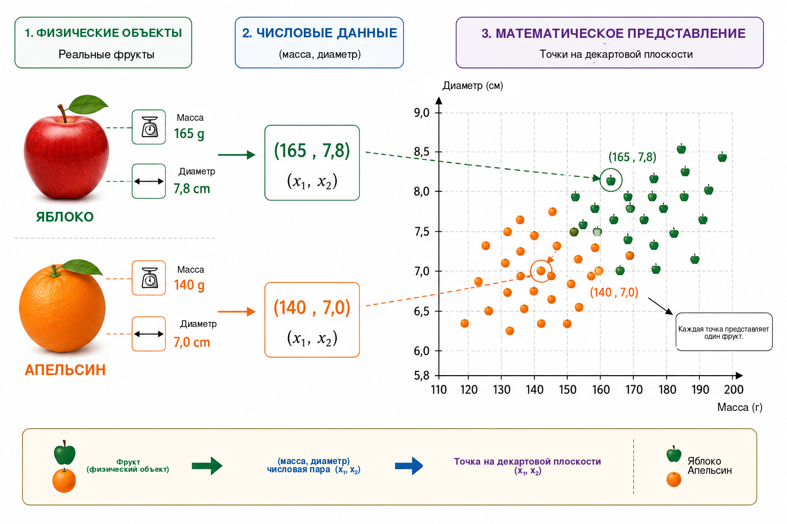
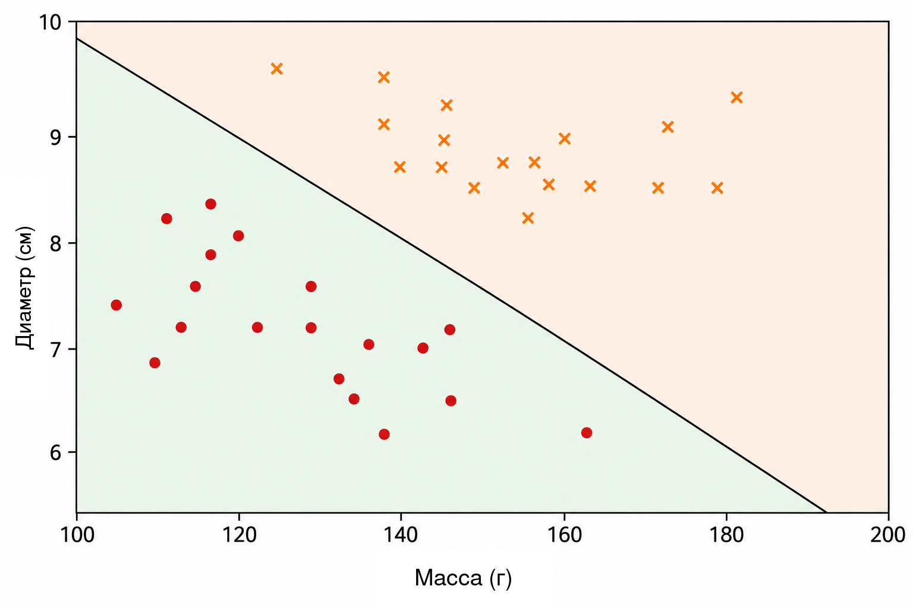
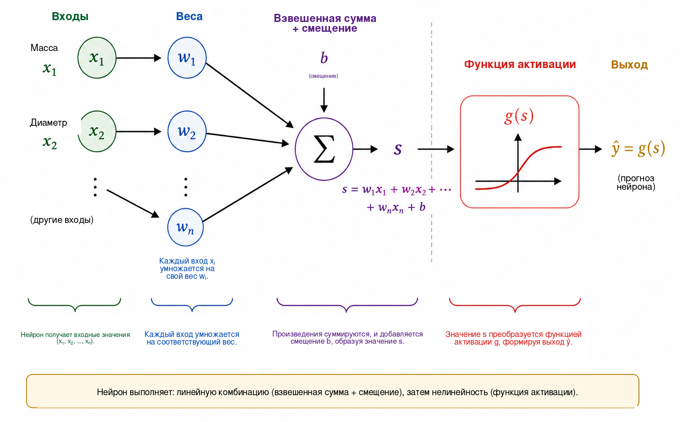
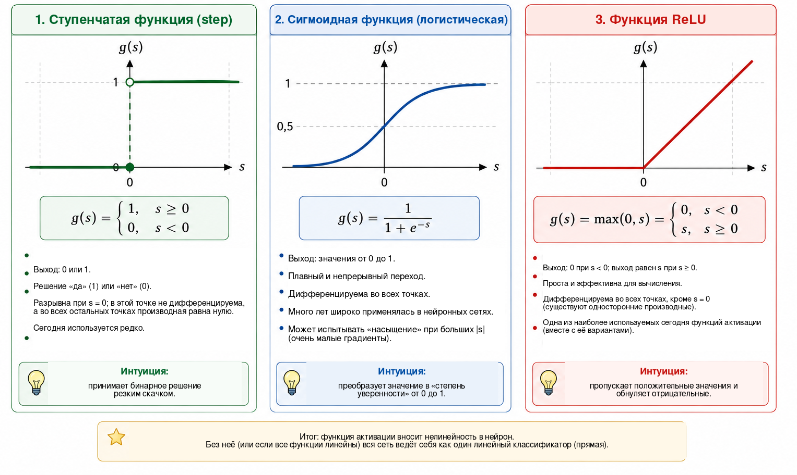
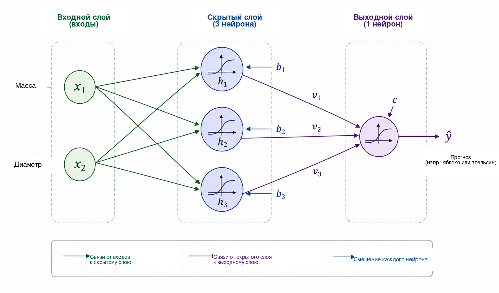
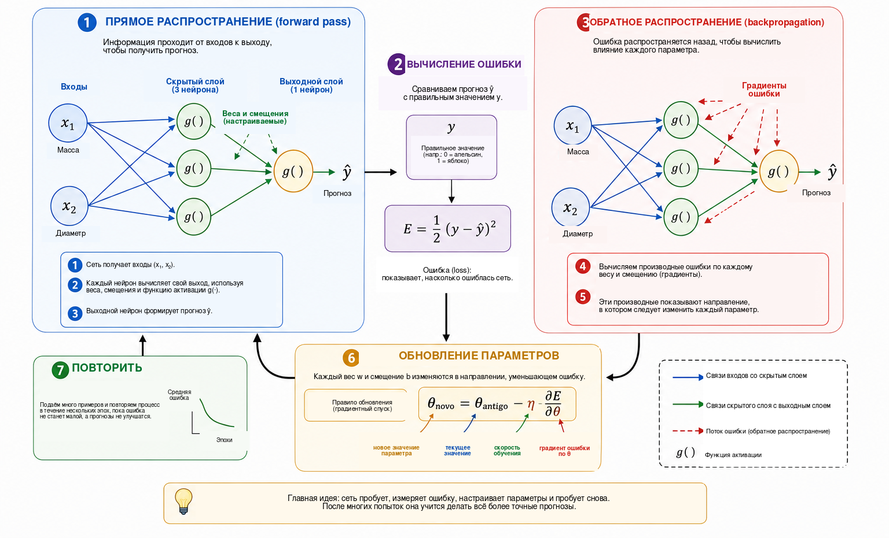
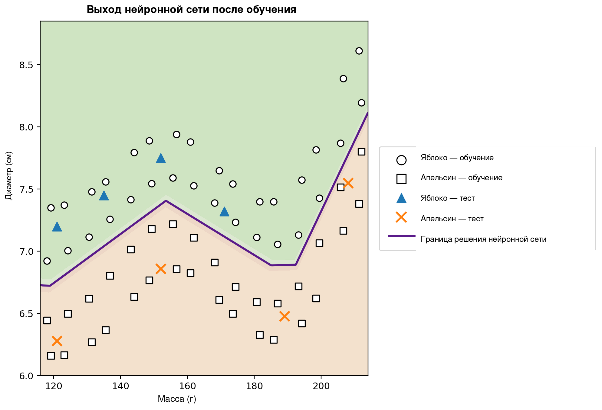

Когда компьютер может учиться?
В повседневной жизни мы принимаем решения о классификации почти не замечая этого. Глядя на фрукт, мы быстро определяем, яблоко это или апельсин; когда на телефон приходит сообщение, отличаем обычную переписку от нежелательной рекламы; в медицинском анализе несколько измерений могут совместно использоваться для принятия решения; в финансовых организациях перед выдачей кредита оценивается множество сведений. Во всех этих примерах несколько признаков рассматриваются вместе, чтобы получить ответ.
Во многих традиционных компьютерных программах правила, приводящие к такому ответу, явно задаются программистом. Этот подход хорошо работает, когда правила известны и могут быть сформулированы однозначно. Он становится менее эффективным, если данные сильно изменчивы или трудно заранее перечислить все условия, необходимые для хорошего решения. Отсюда возникает естественный вопрос:
Можно ли построить программу, которая сама изучит правило принятия решения по примерам, вместо того чтобы получить это правило заранее?
Это одна из центральных идей машинного обучения — области искусственного интеллекта, изучающей методы построения моделей по данным . В задаче обучения с учителем алгоритм получает примеры вместе с правильными ответами, а мы стремимся получить модель, способную делать полезные прогнозы и для случаев, не использованных при обучении. Среди многочисленных моделей, разработанных для этой цели, искусственные нейронные сети приобрели особое значение в распознавании изображений, обработке языка, анализе сигналов и прогнозировании временных рядов .
Использование нейронных сетей как моста между математикой, вычислениями и школьным образованием уже обсуждалось в журнале Professor de Matemática Online Батистой и Мартинсом , которые представили занятие, объединяющее подготовку учителей, Python и распознавание цифр. Настоящая статья следует дополняющему пути. Наша основная цель — раскрыть внутреннюю математику небольшой нейронной сети, начиная с аналитической геометрии и шаг за шагом переходя к вычислению градиентов и ручной реализации обратного распространения ошибки.
Несмотря на сложность современных приложений, математическое ядро нейронной сети можно объяснить с помощью сравнительно знакомых идей. На базовом уровне нейронная сеть представляет собой композицию функций, параметры которых настраиваются по данным. Мы начинаем с простой геометрической задачи, переосмысливаем разделяющую прямую как искусственный нейрон, соединяем несколько нейронов, изучаем роль функций активации и показываем, как производные позволяют автоматически корректировать параметры сети. Затем реализуем небольшой полный пример на Python, сохраняя непосредственное соответствие между уравнениями и кодом.
Математическое представление задачи
Чтобы понять работу нейронной сети, начнём с намеренно простой задачи: отличать яблоки от апельсинов. У фрукта есть много признаков, которые могли бы быть полезны для этой цели: цвет, масса, диаметр, текстура и аромат. Однако начальная математическая модель не обязана включать всю эту сложность. Мы будем использовать только две легко измеряемые величины: массу в граммах и диаметр в сантиметрах.
Каждый фрукт будем представлять упорядоченной парой \[(x_1,x_2),\] где \[x_1=\text{масса} \qquad\text{и}\qquad x_2=\text{диаметр}.\]
Таким образом, пара \((155,\;7.2)\) представляет фрукт массой \(155\) г и диаметром \(7.2\) см. Заменяя физический объект двумя числовыми измерениями, мы сопоставляем каждому фрукту точку на декартовой плоскости: первая координата задаёт его массу, вторая — диаметр. На рисунке 1 показано такое представление для условного набора яблок и апельсинов.

Такое преобразование меняет сам взгляд на задачу. Вместо прямого вопроса о том, как распознать яблоко или апельсин, можно поставить геометрический вопрос: как разделить на плоскости точки, принадлежащие двум классам? Эта смена точки зрения принципиальна для машинного обучения. Изображения, тексты, звуки и экспериментальные сигналы должны быть преобразованы в числовые представления, прежде чем алгоритм сможет их обработать. В нашем примере объект имеет лишь две координаты; в реальных приложениях представление может содержать сотни, тысячи и даже миллионы компонент. Принцип остаётся тем же: каждому примеру сопоставляется набор чисел, а модель ищет правило, отображающее это представление в требуемый ответ.
Начнём с простейшего доступного геометрического правила и спросим, может ли одна прямая достаточно хорошо отделить точки яблок от точек апельсинов.
Прямая как классификатор
После того как каждый фрукт представлен точкой на декартовой плоскости, классификация становится геометрической задачей: может ли прямая отделить яблоки от апельсинов? Этот вопрос выражает основную идею важного семейства методов машинного обучения, известных как линейные классификаторы.
Рассмотрим прямую, пересекающую облако данных, как показано на рисунке 2. Она делит плоскость на две полуплоскости. Если большинство точек яблок лежит по одну сторону, а большинство точек апельсинов — по другую, положение нового фрукта относительно прямой можно использовать как правило классификации. Измерив его массу и диаметр, мы представляем фрукт точкой и определяем, в какой полуплоскости она находится.

На декартовой плоскости \((x_1,x_2)\) прямая может быть описана уравнением \[w_1x_1+w_2x_2+b=0, \qquad (w_1,w_2)\neq(0,0).\]
Вектор \((w_1,w_2)\) перпендикулярен прямой и поэтому определяет её ориентацию, а параметр \(b\) влияет на её положение. В таком представлении есть небольшая избыточность: умножение \(w_1\), \(w_2\) и \(b\) на одну и ту же ненулевую константу даёт ту же самую прямую. Следовательно, параметры границы не уникальны. Их числовая интерпретация также зависит от масштаба переменных. Поскольку масса измеряется в граммах, а диаметр — в сантиметрах, сравнивать численные величины \(w_1\) и \(w_2\) без учёта единиц измерения нельзя.
Само уравнение прямой позволяет просто определить, по какую сторону границы находится точка. Введём величину \[s(x_1,x_2)=w_1x_1+w_2x_2+b.\]
Если \(s(x_1,x_2)=0\), точка лежит на прямой. Если \(s(x_1,x_2)>0\), она находится в одной полуплоскости; если \(s(x_1,x_2)<0\) — в другой. Если договориться, что положительные значения соответствуют яблокам, а отрицательные — апельсинам, правило принимает вид \[\begin{cases} s(x_1,x_2)\geq 0 & \Longrightarrow \text{яблоко},\\ s(x_1,x_2)<0 & \Longrightarrow \text{апельсин}. \end{cases}\]
Например, рассмотрим границу, заданную параметрами \[w_1=\frac{1}{10}, \qquad w_2=2, \qquad b=-30.\] Для фрукта массой \(160\) г и диаметром \(7.8\) см \[\begin{aligned} s &=\frac{1}{10}\times160+2\times7.8-30\\ &=16+15.6-30\\ &=1.6. \end{aligned}\] Поскольку значение положительно, точка находится в полуплоскости, которую мы связали с яблоками. Такой классификатор отнесёт фрукт к классу яблок.
Не всякий выбор \(w_1\), \(w_2\) и \(b\) обеспечивает хорошую классификацию. Одни прямые плохо разделяют группы, другие дают меньше ошибок. Задача обучения как раз состоит в том, чтобы по ранее размеченным примерам найти значения параметров, уменьшающие некоторую меру ошибки модели. Вместо того чтобы программировать положение прямой непосредственно, мы хотим, чтобы алгоритм настраивал её коэффициенты по данным.
Одна прямая может работать хорошо, когда классы приблизительно линейно разделимы. Для более сложных наборов данных может потребоваться нелинейная граница. Прежде чем обсуждать это ограничение, переосмыслим построенный классификатор как элементарную вычислительную единицу — искусственный нейрон.
Искусственный нейрон
В предыдущем разделе выражение \[s=w_1x_1+w_2x_2+b\] использовалось для определения стороны прямой, на которой находится фрукт. То же выражение можно рассматривать как первый этап вычисления, выполняемого искусственным нейроном. Нейрон получает числовые входы, объединяет их с помощью весов и смещения, а затем применяет математическую функцию для получения выхода.
В нашем примере входами служат масса \(x_1\) и диаметр \(x_2\). Каждый вход умножается на параметр, называемый весом; произведения складываются вместе с постоянным членом \(b\), называемым смещением. На рисунке 3 эта операция показана схематически.

Веса определяют, как изменения входов влияют на значение \(s\). Если \(x_2\) и все остальные величины фиксированы, изменение \(\Delta x_1\) изменяет \(s\) на \(w_1\Delta x_1\). Аналогично, изменение \(\Delta x_2\) меняет его на \(w_2\Delta x_2\). Знак веса также важен: при положительном весе увеличение входа увеличивает \(s\), а при отрицательном — уменьшает. Это толкование требует осторожности, если переменные имеют разные единицы и масштабы. Поэтому на практике входные данные перед обучением часто нормируют или стандартизуют.
Смещение \(b\) — постоянный член аффинного преобразования. Геометрически оно позволяет сдвигать границу решения. Если \(b=0\), уравнение \[w_1x_1+w_2x_2=0\] заставляет прямую проходить через начало координат. При наличии смещения граница может располагаться в других местах. Эквивалентно, при \(x_1=x_2=0\) получаем просто \(s=b\).
Значение \(s\) не обязательно является окончательным выходом нейрона. Обычно к нему применяется функция активации \(g\): \[\widehat{y}=g(s)=g\left(w_1x_1+w_2x_2+b\right).\] Таким образом, вычисление состоит из двух этапов: \[\begin{aligned} s &= w_1x_1+w_2x_2+b,\\[4pt] \widehat{y} &= g(s). \end{aligned}\]
Для параметров из предыдущего раздела получаем \(s=1.6\). Если выбрать ступенчатую функцию \[g(s)= \begin{cases} 1, & s\geq0,\\ 0, & s<0, \end{cases}\] то \(\widehat{y}=g(1.6)=1\). По принятому соглашению фрукт классифицируется как яблоко. При такой активации решение меняется при пересечении \(s=0\), поэтому граница классов точно задаётся уравнением \[w_1x_1+w_2x_2+b=0.\]
Итак, отдельный нейрон — простой математический объект с настраиваемыми параметрами. Его настоящая сила проявляется при соединении многих таких элементов. Но прежде чем строить сеть, нужно понять, почему функция активации принципиально важна.
Зачем нужна функция активации?
Сначала нейрон вычисляет значение с помощью аффинного преобразования и только затем применяет функцию активации. Этот второй этап необходим, если нейронная сеть должна представлять сложные зависимости. Чтобы увидеть причину, представим сеть без функций активации. Каждый её элемент имел бы вид \[y=w_1x_1+w_2x_2+b.\]
Для одномерной иллюстрации пусть первый элемент вычисляет \[h=ax+b\] а второй — \[y=ch+d.\] Подстановка даёт \[y=c(ax+b)+d=acx+(cb+d),\] то есть снова аффинную функцию от \(x\). То же справедливо и в многомерном случае: композиция аффинных преобразований остаётся аффинной. Поэтому добавление множества слоёв без нелинейной операции не делает сеть принципиально более выразительной; всю композицию можно заменить одним аффинным преобразованием.
Функция активации снимает это ограничение. После вычисления \(s\) нейрон применяет, как правило, нелинейное отображение \[h=g(s).\] Когда несколько таких элементов соединены, полученная композиция уже не сводится к одному аффинному преобразованию. Благодаря этому сеть способна строить более сложные границы решений.
Самая простая активация — ступенчатая функция \[g(s)= \begin{cases} 1, & s\geq0,\\ 0, & s<0. \end{cases}\] Она формирует бинарное решение и очень полезна для понимания классификации. Однако её производная равна нулю при \(s\neq0\) и не определена при \(s=0\). Поскольку обучение на основе градиента использует производные, чтобы определить, как должны изменяться параметры, ступенчатая функция не подходит для такого механизма обучения.
Одна из альтернатив — сигмоидная функция \[\sigma(s)=\frac{1}{1+e^{-s}}.\] Она отображает любое вещественное число в значение строго между \(0\) и \(1\). При сильно отрицательном \(s\) выход приближается к \(0\), при сильно положительном — к \(1\), а между этими крайностями переход является плавным. Сигмоида дифференцируема всюду, причём \[\sigma'(s)=\sigma(s)\bigl(1-\sigma(s)\bigr).\] Поскольку её значения лежат между \(0\) и \(1\), она часто используется в выходном слое бинарного классификатора. В вероятностной постановке с подходящей функцией потерь выход можно интерпретировать как оценку вероятности класса, обозначенного единицей. Однако в скрытых слоях сигмоида может создавать проблему: при входах большой абсолютной величины её производная становится очень малой, что способствует возникновению проблемы исчезающего градиента в глубоких сетях.
Широко используемая функция активации скрытых слоёв — ReLU (Rectified Linear Unit), \[\mathrm{ReLU}(s)=\mathrm{max}(0,s) = \begin{cases} 0, & s<0,\\ s, & s\geq0. \end{cases}\] Хотя она состоит из двух линейных частей, ReLU не является линейной функцией на всей области определения. Её производная равна \(0\) при \(s<0\) и \(1\) при \(s>0\). В точке \(s=0\) обычная производная не существует, поэтому программные реализации используют некоторое соглашение для градиента. Для положительных входов производная не уменьшается с ростом \(s\), что устраняет один из механизмов насыщения, характерный для сигмоиды.
На рисунке 4 эти три функции сравниваются визуально: резкий скачок ступенчатой функции, плавный переход сигмоиды и изменение наклона ReLU.

Их основные свойства сведены ниже.
| Функция | Выход | Производная | Типичное применение |
|---|---|---|---|
| Ступенчатая | \(\{0,1\}\) | Ноль при \(s\neq0\); не определена при \(s=0\) | Исторические модели и учебные примеры |
| Сигмоида | \((0,1)\) | Существует при любом \(s\) | Выходной слой бинарной классификации |
| ReLU | \([0,\infty)\) | \(0\) при \(s<0\) и \(1\) при \(s>0\) | Скрытые слои |
Детали этих функций различаются, но их общая концептуальная роль состоит во внесении нелинейности. Именно эта нелинейность позволяет небольшой сети из следующего раздела представлять зависимости, которые невозможно выразить одной прямой.
Для дальнейшего изучения можно обратиться к классическому изложению нейронных сетей у Хайкина ; Гудфеллоу, Бенжио и Курвилль рассматривают функции активации и обучение глубоких сетей в более широком контексте. Свободно доступная книга Нильсена особенно удобна для развития интуиции о нейронах, активациях и обучении.
Построение небольшой нейронной сети
Рассмотрим сеть с двумя входами, одним скрытым слоем из трёх нейронов и одним выходным нейроном. Входы остаются прежними: \[x_1=\text{масса}, \qquad x_2=\text{диаметр},\] и оба подаются на каждый скрытый нейрон, как показано на рисунке 5.

Обозначим выходы скрытого слоя через \(h_1\), \(h_2\) и \(h_3\). Каждый нейрон получает одни и те же два входа, но имеет собственные веса и смещение: \[\begin{aligned} h_1&=g\left(w_{11}x_1+w_{12}x_2+b_1\right),\\[4pt] h_2&=g\left(w_{21}x_1+w_{22}x_2+b_2\right),\\[4pt] h_3&=g\left(w_{31}x_1+w_{32}x_2+b_3\right). \end{aligned}\]
Хотя все три нейрона получают одинаковые массу и диаметр, они могут давать разные ответы, потому что их параметры различны. Во время обучения параметры настраиваются так, чтобы промежуточные активации становились полезными для классификации.
Три величины \(h_1\), \(h_2\) и \(h_3\) передаются выходному нейрону, который вычисляет \[s_{\mathrm{out}}=v_1h_1+v_2h_2+v_3h_3+c\] и формирует \[\widehat{y}=g_{\mathrm{out}}\left(s_{\mathrm{out}}\right).\] Для нашей бинарной задачи используем сигмоиду на выходе: \[\widehat{y}=\sigma\left(v_1h_1+v_2h_2+v_3h_3+c\right), \qquad 0<\widehat{y}<1.\]
Пусть \(y=1\) означает яблоко, а \(y=0\) — апельсин. Тогда порог \(0.5\) задаёт решение \[\widehat{y}\geq0.5 \Longrightarrow \text{яблоко}, \qquad \widehat{y}<0.5 \Longrightarrow \text{апельсин}.\] Значения, близкие к \(1\), тем самым тесно связаны с яблоками, а значения, близкие к \(0\), — с апельсинами. Как отмечалось ранее, численная интерпретация \(\widehat{y}\) как вероятности требует дополнительных предположений о модели и её обучении. Для используемого здесь правила классификации достаточно рассматривать \(\widehat{y}\) как непрерывный выход сети.
Ключевая особенность этой архитектуры — промежуточное представление \[(x_1,x_2) \longrightarrow (h_1,h_2,h_3) \longrightarrow \widehat{y}.\] Сеть получает два признака и строит три новые величины, прежде чем сформировать окончательный ответ. Эти активации не выбираются вручную: они зависят от весов и смещений и поэтому изменяются в процессе обучения параметров.
Несмотря на небольшой размер, сеть уже содержит тринадцать настраиваемых параметров. Три скрытых нейрона содержат \[3(2+1)=9\] параметров, а выходной нейрон добавляет \[3+1=4.\] Следовательно, \[9+4=13.\]
То же число особенно прозрачно в матричной записи. Определим \[\mathbf{x}= \begin{bmatrix} x_1\\x_2 \end{bmatrix}, \qquad W^{(1)}= \begin{bmatrix} w_{11}&w_{12}\\ w_{21}&w_{22}\\ w_{31}&w_{32} \end{bmatrix}, \qquad \mathbf{b}^{(1)}= \begin{bmatrix} b_1\\b_2\\b_3 \end{bmatrix}.\] Тогда скрытый слой компактно записывается как \[\mathbf{h}=g\left(W^{(1)}\mathbf{x}+\mathbf{b}^{(1)}\right),\] где \(g\) действует покомпонентно. Для выхода \[\widehat{y} = \sigma\left(W^{(2)}\mathbf{h}+b^{(2)}\right),\] где \[W^{(2)}= \begin{bmatrix} v_1&v_2&v_3 \end{bmatrix}.\]
Эта запись предвосхищает структуру программы на Python. Когда фрукт подаётся на вход и мы последовательно вычисляем активации вплоть до \(\widehat{y}\), выполняется прямое распространение (forward pass). Главный вопрос остаётся прежним: как автоматически определить тринадцать параметров так, чтобы прогнозы соответствовали данным?
Как обучается нейронная сеть?
Веса и смещения заранее неизвестны. Их необходимо настраивать по примерам, для которых правильный ответ известен. Этот процесс называется обучением и может быть представлен циклом \[\boxed{\text{сделать прогноз}} \longrightarrow \boxed{\text{измерить ошибку}} \longrightarrow \boxed{\text{изменить параметры}} \longrightarrow \boxed{\text{повторить}}.\]
Рассмотрим фрукт массой \(140\) г и диаметром \(7.0\) см, правильный класс которого — апельсин, то есть \(y=0\). Предположим, что на некотором этапе обучения сеть выдаёт \(\widehat{y}=0.80\). Простой мерой расхождения между прогнозом и целевым значением является квадратичная ошибка \[E=\frac{1}{2}\left(y-\widehat{y}\right)^2.\] Для этого примера \[E=\frac{1}{2}(0-0.80)^2=0.32.\]
Это выражение является функцией потерь для одного примера. Поскольку используется квадрат, \(E\geq0\), а прогнозы, более далёкие от цели, получают больший штраф. Множитель \(1/2\) не меняет положение минимума, но упрощает производные. В бинарной классификации часто применяются другие функции потерь, прежде всего перекрёстная энтропия. Здесь мы используем квадратичную ошибку, поскольку её алгебра прозрачна и достаточна для введения оптимизации и обратного распространения ошибки .
Если обучающая выборка содержит \(N\) примеров, глобальной мерой может служить средняя потеря \[J=\frac{1}{N}\sum_{i=1}^{N}E_i.\] Каждый прогноз зависит от весов и смещений сети, поэтому \(J\) также зависит от всех этих параметров. Обучение означает поиск таких значений параметров, при которых \(J\) мало.
Чтобы понять механизм настройки, сначала представим, что все параметры, кроме одного веса \(w\), зафиксированы. Тогда потерю можно рассматривать как функцию \(J=J(w)\). На рисунке 6 суммированы основные этапы обучения, которые мы теперь рассмотрим.

Для читателей, мало знакомых с математическим анализом, производную здесь можно понимать как меру локальной чувствительности: она показывает, как небольшое изменение параметра стремится изменить потерю. Её знак указывает направление локального увеличения или уменьшения функции, а модуль характеризует силу этого изменения.
Производная \[\frac{\partial J}{\partial w}\] задаёт локальный наклон. Если она положительна, небольшое увеличение \(w\) стремится увеличить \(J\), поэтому вес следует изменять в противоположном направлении. Если она отрицательна, увеличение \(w\) локально стремится уменьшить \(J\). Оба случая описываются правилом \[w_{\mathrm{new}} = w_{\mathrm{old}} - \eta\frac{\partial J}{\partial w},\] которое выражает основную идею градиентного спуска. Положительное число \(\eta\) называется скоростью обучения и определяет размер шага. Слишком малое значение может сделать обучение медленным, а чрезмерно большое — вызвать колебания или нестабильность.
Для сети с множеством параметров обозначим через \(\theta\) любой вес или смещение. Тогда обновление записывается как \[\theta_{\mathrm{new}} = \theta_{\mathrm{old}} - \eta\frac{\partial J}{\partial\theta}.\] Совокупность всех частных производных образует градиент функции потерь. Геометрически градиент указывает направление наибольшего локального роста, поэтому отрицательный градиент задаёт локальное направление убывания.
Остаётся вычислить эти производные, когда сеть представляет собой композицию нескольких функций. Во время прямого прохода информация движется по схеме \[\text{входы} \longrightarrow \text{скрытый слой} \longrightarrow \text{выход}.\] Чтобы определить, как параметр раннего слоя влияет на потерю, мы математически прослеживаем цепочку зависимостей в обратном направлении. Эта процедура называется обратным распространением ошибки (backpropagation). По существу, это систематическое и эффективное применение цепного правила. Классическая работа Румельхарта, Хинтона и Уильямса сыграла важную роль в популяризации этого метода для сетей со скрытыми слоями; Нильсен даёт подробный и особенно наглядный вывод.
Для простой цепочки зависимостей, в которой \(E\) зависит от \(\widehat{y}\), та — от активации \(h\), а \(h\) — от веса \(w\), цепное правило даёт \[\frac{\partial E}{\partial w} = \frac{\partial E}{\partial\widehat{y}} \, \frac{\partial\widehat{y}}{\partial h} \, \frac{\partial h}{\partial w}.\] Каждый множитель описывает один этап влияния \(w\) на итоговую потерю. В больших сетях существует много таких цепочек, а обратное распространение организует вычисления так, чтобы промежуточные производные можно было повторно использовать, а не пересчитывать отдельно для каждого параметра.
На практике обучение использует много примеров. Один полный проход по обучающей выборке называется эпохой. Параметры можно обновлять после каждого примера, как в учебной программе далее в статье, или после небольших групп примеров, называемых мини-пакетами (mini-batches), что типично для больших сетей. В обоих случаях цикл прогнозов, потерь, градиентов и обновлений повторяется в течение многих эпох.
Наглядный способ представить эту эволюцию — отслеживать прогноз для одного фиксированного примера на разных этапах обучения. Снова рассмотрим фрукт массой \(140\) г и диаметром \(7.0\) см, правильный класс которого — апельсин. В таблице 1 приведён условный ход обучения. Эти числа не относятся к конкретному запуску, а лишь иллюстрируют механизм.
| Эпоха | Прогноз \(\widehat{y}\) | Потеря \(E\) | Классификация |
|---|---|---|---|
| 1 | 0.86 | 0.37 | Яблоко |
| 5 | 0.71 | 0.25 | Яблоко |
| 10 | 0.55 | 0.15 | Яблоко |
| 20 | 0.31 | 0.05 | Апельсин |
| 40 | 0.09 | 0.004 | Апельсин |
В начале выход близок к \(1\), и фрукт ошибочно классифицируется как яблоко. По мере настройки параметров прогноз уменьшается и в конце концов пересекает порог \(0.5\), давая правильный класс. В процессе меняются числовые значения весов и смещений; архитектура сети остаётся неизменной.
Уменьшение потерь на обучающих данных не является конечной целью. Полезная сеть должна хорошо работать и на примерах, не использованных при настройке параметров. Эта способность называется обобщением. Если модель слишком тесно подстраивается под особенности обучающей выборки и хуже работает на новых данных, возникает переобучение. В более строгих оценках данные обычно делят на обучающую, валидационную и тестовую выборки: первая используется для подбора параметров, вторая — для решений, принимаемых при разработке модели, третья сохраняется для итоговой оценки. Более широкое обсуждение обобщения и оценки моделей можно найти у Faceli et al. и Goodfellow, Bengio, Courville .
Итак, мы пришли к математическому смыслу обучения нейронной сети. В данном контексте учиться означает настраивать параметры составной функции так, чтобы уменьшать меру ошибки на данных и, в идеале, обобщать полученное правило на новые примеры. Сеть делает прогноз, вычисляет потерю, использует производные, чтобы определить влияние параметров на эту потерю, и выполняет последовательность небольших коррекций.
От математики к Python
Теперь перейдём от уравнений к исполняемой программе. Наша цель — не использовать специализированную библиотеку нейронных сетей, а непосредственно реализовать с помощью NumPy математические операции, разработанные на протяжении статьи . Это позволяет построчно увидеть, как в коде появляются линейные комбинации, функции активации, вычисление потерь, обратное распространение ошибки и градиентный спуск.
Для более убедительного итогового примера используем синтетический набор данных, распределённый по более широкой области плоскости «масса–диаметр». Мы по-прежнему работаем только с двумя физическими признаками — массой в граммах и диаметром в сантиметрах, — но теперь распределяем \(64\) обучающих примера по значительной части плоскости и откладываем ещё восемь примеров для иллюстративного теста. Данные остаются синтетическими и лежат в правдоподобных диапазонах для яблок и апельсинов. Они построены так, чтобы получить нелинейную границу решения, не концентрируя все точки в нескольких чрезмерно искусственных кластерах.
Геометрическая идея проста. Мы задаём опорную кривую на плоскости «масса–диаметр», размещаем яблоки в двух полосах выше этой кривой, а апельсины — в двух полосах ниже неё. К массе и диаметру добавляются небольшие детерминированные возмущения, чтобы наблюдения занимали более широкую область. Полученный пример богаче предыдущих иллюстраций: он содержит больше точек, данные распределены по области, а подходящая граница решения явно сильнее искривлена, чем прямая.
Для этого вычислительного эксперимента увеличим скрытый слой до двенадцати ReLU-нейронов. Это не меняет концептуальную структуру, изученную в предыдущих разделах; лишь увеличивает способность сети представлять более сложную границу. Вместо \(13\) параметров в учебной сети с тремя нейронами теперь имеем \(49\) настраиваемых параметров: \(24\) веса и \(12\) смещений в первом слое, затем \(12\) весов и одно смещение в выходном слое. Уравнения сохраняют тот же вид; увеличиваются только векторы и матрицы.
Полная программа приведена ниже.
import numpy as np
import matplotlib.pyplot as plt
from matplotlib.lines import Line2D
def relu(s):
return np.maximum(0, s)
def relu_derivative(s):
return (s > 0).astype(float)
def sigmoid(s):
return 1 / (1 + np.exp(-s))
def base_boundary(m):
return 6.68 + 0.74*np.exp(-((m-155)/20)**2) \
+ 1.50/(1 + np.exp(-(m-202)/5))
def build_data():
masses_1 = np.linspace(118, 212, 16)
masses_2 = masses_1 + np.array([
1.2,-1.1,0.8,-1.3,1.0,-0.8,1.1,-1.0,
1.3,-0.9,0.9,-1.2,1.0,-1.0,0.8,-0.7
])
k = np.arange(16)
a1 = np.column_stack([
masses_1,
base_boundary(masses_1) + 0.22 + 0.05*np.sin(0.8*k)
])
a2 = np.column_stack([
masses_2,
base_boundary(masses_2) + 0.58 + 0.06*np.cos(0.45*k)
])
o1 = np.column_stack([
masses_1,
base_boundary(masses_1) - (0.22 + 0.04*np.cos(0.7*k))
])
o2 = np.column_stack([
masses_2,
base_boundary(masses_2) - (0.55 + 0.05*np.sin(0.5*k))
])
X_train = np.vstack([a1, a2, o1, o2])
y_train = np.array([1.0]*32 + [0.0]*32)
X_test = np.array([
[121.0, 7.20], [135.0, 7.45],
[152.0, 7.75], [171.0, 7.32],
[121.0, 6.28], [152.0, 6.86],
[189.0, 6.48], [208.0, 7.55]
])
y_test = np.array([1,1,1,1,0,0,0,0], dtype=float)
return X_train, y_train, X_test, y_test
def predict(X, mean, std, W1, b1, W2, b2):
Xn = (X - mean) / std
outputs = []
for x in Xn:
h = relu(W1 @ x + b1)
y_hat = sigmoid(W2 @ h + b2)
outputs.append(y_hat)
return np.array(outputs)
X_train, y_train, X_test, y_test = build_data()
mean = X_train.mean(axis=0)
std = X_train.std(axis=0)
Xn = (X_train - mean) / std
rng = np.random.default_rng(42)
W1 = 0.1 * rng.standard_normal((12, 2))
b1 = np.zeros(12)
W2 = 0.1 * rng.standard_normal(12)
b2 = 0.0
eta = 0.05
n_epochs = 6000
history = []
for epoch in range(n_epochs):
for i in rng.permutation(len(Xn)):
x = Xn[i]
target = y_train[i]
z1 = W1 @ x + b1
h = relu(z1)
z2 = W2 @ h + b2
y_hat = sigmoid(z2)
delta2 = (y_hat - target) * y_hat * (1 - y_hat)
dW2 = delta2 * h
db2 = delta2
delta1 = (delta2 * W2) * relu_derivative(z1)
dW1 = np.outer(delta1, x)
db1 = delta1
W1 -= eta * dW1
b1 -= eta * db1
W2 -= eta * dW2
b2 -= eta * db2
errors = []
for x, target in zip(Xn, y_train):
h = relu(W1 @ x + b1)
y_hat = sigmoid(W2 @ h + b2)
errors.append(0.5 * (target - y_hat)**2)
history.append(np.mean(errors))
def make_figure():
masses = np.linspace(116, 214, 500)
diameters = np.linspace(6.0, 8.85, 500)
M, D = np.meshgrid(masses, diameters)
grid = np.column_stack([M.ravel(), D.ravel()])
P = predict(grid, mean, std, W1, b1, W2, b2).reshape(M.shape)
fig, ax = plt.subplots(figsize=(9.2, 6.3))
ax.contourf(
M, D, P,
levels=[0.0, 0.25, 0.50, 0.75, 1.0],
colors=["#f3e0cb", "#ecd5c4", "#dbe7cf", "#cde3bf"],
alpha=0.95
)
ax.contour(M, D, P, levels=[0.5],
colors=["#5a1a8a"], linewidths=2.2)
mask = y_train == 1.0
ax.scatter(X_train[mask,0], X_train[mask,1], marker="o",
s=48, facecolors="white", edgecolors="black",
linewidths=1.1, label="Apple - training")
mask = y_train == 0.0
ax.scatter(X_train[mask,0], X_train[mask,1], marker="s",
s=48, facecolors="white", edgecolors="black",
linewidths=1.1, label="Orange - training")
mask = y_test == 1.0
ax.scatter(X_test[mask,0], X_test[mask,1], marker="^",
s=92, color="#1f77b4", label="Apple - test")
mask = y_test == 0.0
ax.scatter(X_test[mask,0], X_test[mask,1], marker="x",
s=110, color="#ff7f0e", linewidths=2.0,
label="Orange - test")
ax.set_xlabel("Mass (g)")
ax.set_ylabel("Diameter (cm)")
ax.set_title("Neural-network output after training")
handles = [
Line2D([0],[0], marker='o', markersize=9,
markerfacecolor='white', markeredgecolor='black',
linestyle='None', label='Apple - training'),
Line2D([0],[0], marker='s', markersize=9,
markerfacecolor='white', markeredgecolor='black',
linestyle='None', label='Orange - training'),
Line2D([0],[0], marker='^', markersize=9, color='#1f77b4',
linestyle='None', label='Apple - test'),
Line2D([0],[0], marker='x', markersize=10, color='#ff7f0e',
linestyle='None', label='Orange - test'),
Line2D([0],[0], color='#5a1a8a', lw=2.2,
label='Neural-network decision boundary')
]
ax.legend(handles=handles, loc='center left',
bbox_to_anchor=(1.02, 0.5), frameon=True)
fig.tight_layout()
plt.show()Хотя код длиннее первых уравнений, рассмотренных в статье, его структура остаётся прозрачной. Функция build_data() автоматически создаёт \(64\) обучающих примера и восемь иллюстративных тестовых примеров. Затем обе переменные стандартизуются по формуле \[x_j^{\ast}=\frac{x_j-\mu_j}{\sigma_j},\] где \(\mu_j\) и \(\sigma_j\) вычисляются только по обучающей выборке. Это не позволяет тестовой выборке влиять на подгонку параметров и одновременно приводит массу и диаметр к сопоставимым числовым масштабам.
Сущность прямого прохода не меняется. Единственное отличие в том, что первый слой теперь выдаёт вектор из двенадцати скрытых активаций. В матричной записи \[\mathbf{z}^{(1)}=W^{(1)}\mathbf{x}+\mathbf{b}^{(1)}, \qquad \mathbf{h}=\mathrm{ReLU}(\mathbf{z}^{(1)}),\] \[z^{(2)}=W^{(2)}\mathbf{h}+b^{(2)}, \qquad \widehat{y}=\sigma(z^{(2)}).\] Эти четыре строки по-прежнему содержат математическое ядро алгоритма. Обучение также сохраняет введённую ранее логику: вычислить прогноз, измерить ошибку, распространить информацию о чувствительности назад с помощью производных и обновить параметры небольшими шагами градиентного спуска.
В коде обратное распространение на выходном слое выражается строкой
delta2 = (y_hat - target) * y_hat * (1 - y_hat)а распространение к скрытому слою — строкой
delta1 = (delta2 * W2) * relu_derivative(z1)после чего обновляются все веса и смещения. Поскольку примеры перемешиваются на каждой эпохе, а параметры изменяются после каждого наблюдения, эта реализация представляет собой элементарную форму стохастического градиентного спуска.
При использованном здесь случайном начальном состоянии и гиперпараметрах конечная средняя потеря имеет порядок от \(10^{-5}\) до \(10^{-4}\), а все \(64\) обучающих примера и восемь иллюстративных тестовых примеров получают ожидаемую классификацию. Это не следует интерпретировать как строгую статистическую оценку качества: данные синтетические и построены в учебных целях. Их задача — показать на менее тривиальном примере, как небольшая нейронная сеть может выучить явно нелинейную границу решения.
На рисунке 7 показан окончательный результат программы на плоскости «масса–диаметр». Отображены все обучающие точки. Выделенная кривая соответствует уровню \(\widehat{y}=0.5\) и представляет границу решения, выученную сетью; закрашенные области показывают два прогнозируемых класса. Кружки обозначают обучающие яблоки, квадраты — обучающие апельсины, треугольники — тестовые яблоки, кресты — тестовые апельсины. Легенда расположена за пределами основной области графика, чтобы не закрывать точки данных.

Мы начали с прямой, разделяющей две простые группы точек, и пришли к более содержательному вычислительному примеру, в котором искривлённая граница возникает вследствие автоматической настройки параметров сети. Никакой новой «тайны» в математике не появилось: реализация лишь организует и многократно повторяет, в большем масштабе и с высокой скоростью, аффинные комбинации, функции активации, производные, матричные произведения и обновления градиентного спуска .
Все вычислительные материалы, связанные с этой статьёй, включая код и исполняемый блокнот Google Colab, доступны по адресу https://neuralmath.org. Это единая точка доступа для читателей, желающих исследовать, воспроизвести или адаптировать примеры.
Заявление об использовании ИИ.
Автор использовал ChatGPT, разработанный OpenAI, как вспомогательный инструмент для подготовки черновика, языковой редакции, организации изложения и создания учебных иллюстраций. Автор несёт полную ответственность за окончательное содержание работы, включая постановку и разработку математического материала, код и использованные источники.